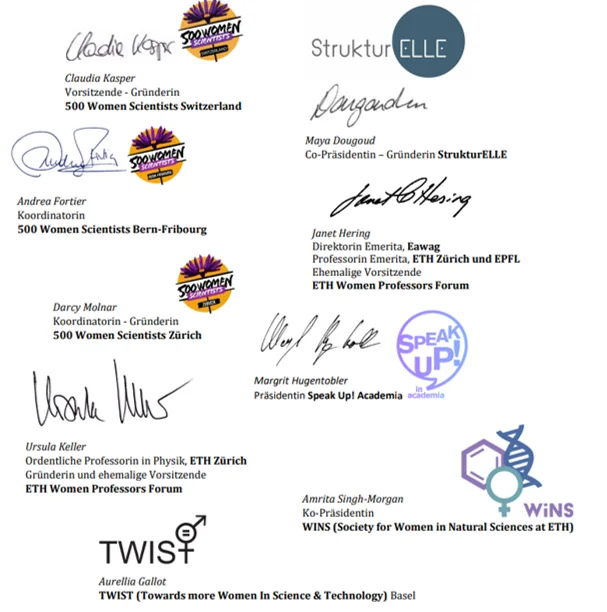

Open letter
An open letter to the SERI
On March 23, 2023the Switzerland-wide Harassment Awareness Day, we teamed up with other associations (ETH Women Professors Forum, StrukturElle, WiNS, TWIST and SpeakUp! Academia to send a letter to the State Secretariat for Education, Research and Innovation SERI, to continue our fight against gender inequality in research. The letter proposes the creation of an independent national reporting center to combat discrimination, sexism, bullying, and sexual harassment in academic institutions. The center would allow victims to report incidents anonymously, and reports from the center should be included in the accreditation process.
Dringendes Anliegen von Frauen in der Schweizer Wissenschaft
Sehr geehrte Frau Staatssekretärin Hirayama,
anlässlich des ersten schweizweiten Sexual Harassment Awareness Day wenden wir uns mit einem dringenden Anliegen an Sie. Der Frauenanteil an Professuren und Führungspositionen an Schweizer Universitäten und Forschungsinstitutionen ist auch heute noch bedauerlich niedrig. Insbesondere verlassen viele Frauen die Forschung in der Postdoc-Phase. Dies hat verschiedene Gründe, aber wir möchten heute einen sehr wichtigen Punkt hervorheben.
Das Ausmass an Diskriminierung, Sexismus, Belästigung, Mobbing und sogar sexuellen Übergriffen, dem viele Frauen (und auch Männer) in karriereentscheidenden Phasen an Universitäten und Forschungseinrichtungen ausgesetzt sind, ist stossend. Es ist immer noch sehr schwierig, Täter und Personen, die Grenzen überschreiten, zur Rechenschaft zu ziehen. Dies geschieht mittlerweile in manchen Fällen, aber es dauert oft lange und ist mit einem enormen persönlichen Aufwand und zu hohen finanziellen und emotionalen Kosten für die Betroffenen verbunden. In der Folge wenden sich die Betroffenen und ihre Kolleginnen und Kollegen in Verbitterung von den Universitäten und Forschungseinrichtungen ab.
In den letzten Jahren haben wir verschiedene Aktionen unternommen, um gegen Missstände anzugehen. Wir haben offene Briefe geschrieben und uns mit Universitätsleitungen und dem Akkreditierungsrat getroffen, um die Einführung der folgenden Maßnahmen zu fordern:
die Festlegung klarer Konsequenzen bei Nicht-Einhaltung der verbindlichen ethischen Richtlinien der jeweiligen Universität oder Forschungseinrichtung[1],[2],[3], idealerweise wird ein gesamtschweizerischer Weg für den Umgang mit denjenigen geschaffen, die gegen den Verhaltenskodex verstossen.
die Einrichtung einer nationalen, unabhängigen Meldestelle1 bzw. von Meldestellen für “critical incident reporting”2
die Einbeziehung von Gleichstellungskriterien und Inklusion in den Akkreditierungsprozess[4], wie in den Juno-Prinzipien[5] dargelegt.
die Verbesserung von systematischem Monitoring und Evaluierung von Institutionen. Dies soll durch das flächendeckende Erheben von anonymen Daten ermöglicht werden. Es sollen Statistiken über die Prävalenz von Diskriminierung und Belästigung[6], Erfolgsindikatoren von Graduiertenprogrammen (z.B. demografische Zusammensetzung, maximale und durchschnittliche Dauer von Promotionsstudiengängen und Erfolgsquoten)5,[7], Mitarbeiter:innenzufriedenheit und Befragungen bei vorzeitiger Beendigung von Dienstverhältnissen2 erstellt werden, wodurch eine Evidenzbasis geschaffen wird, welche Monitoring, Evaluierung sowie Reevaluierung ermöglicht. Die Anzahl der gemeldeten Vorfälle wird jährlich nach Universitäten zusammengefasst und veröffentlicht.
eine erhöhte Transparenz und externe Evaluierung bei Beschwerdeverfahren[8]
eine klare Unterscheidung zwischen Fragen der »good governance« und der akademischen Freiheit. Autonomie in Forschung und Lehre kann keine Entschuldigung für schlechte Governance sein, die Frauen und Minderheiten unverhältnismäßig stark benachteiligt[9]. Gute Governance sollte in institutionellen Evaluierungen bewertet werden.
Wir befürchten, dass weiterhin sehr viel talentierte Arbeitskraft an Schweizer Universitäten und Forschungseinrichtungen verloren geht – hochqualifizierte Personen, in deren Ausbildung viel öffentliches Geld investiert wurde. Dadurch wird auch der Forschungsstandort Schweiz geschwächt.
Es bedarf rasch implementierbarer und effektiver Lösungen, um gegen Diskriminierung, Sexismus, Mobbing und sogar sexuelle Übergriffe vorzugehen und gleichzeitig die Rechte der Beschuldigten zu wahren. Beschwerden werden in der Regel intern an den Universitäten behandelt, was einen eindeutigen Interessenskonflikt darstellt, da die Universitäten verständlicherweise darauf bedacht sind, ihren guten Ruf zu schützen. Die Schaffung einer unabhängigen nationalen Meldestelle, wie sie bereits für den Sport[10] ausgearbeitet wurde, sollte hier als Modell dienen. Betroffene sollen hier, auch anonym, Vorfälle von Diskriminierung, Sexismus, Mobbing und sexuellen Übergriffen melden können. Außerdem muss gewährleistet sein, dass die Berichte dieser Beschwerdestelle in den Akkreditierungsprozess einbezogen werden und dass finanzielle Sanktionen gegen die beteiligten Hochschulen oder Forschungseinrichtungen verhängt werden können, um sicherzustellen, dass Konsequenzen gezogen werden.
Wir hoffen, dass Sie unsere Anliegen ernst nehmen und sich für eine Verbesserung der Situation einsetzen werden.

[1] https://www.500womenscientistsfribourgbern.ch/sign
[2] https://www.500womenscientistszurich.org/_files/ugd/c1ab5e_4275cda3955f4a9eabd96f612db8f39f.pdf
[3] https://www.500womenscientistszurich.org/post/eth-president-meets-doctoral-students
[4] https://www.strukturelle.ch/en/news/alma-mater-primus-inter-pares
[5] https://www.iop.org/about/IOP-diversity-inclusion/Project-Juno/Juno-principles#gref
[7] National Academies of Sciences, Engineering, and Medicine. 2018. Graduate STEM Education for the 21st Century. Washington, DC: The National Academies Press. doi: https://doi.org/10.17226/25038
[9] https://ethz.ch/de/news-und-veranstaltungen/eth-news/news/2019/03/blog-janet-hering-leadership.html
[10] https://www.admin.ch/gov/de/start/dokumentation/medienmitteilungen.msg-id-92635.html